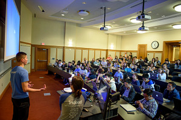
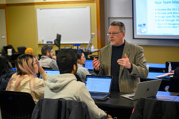
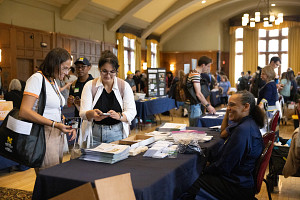
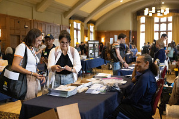
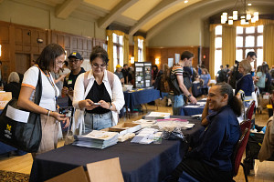

 


UMSI Academic Success is dedicated to supporting students in reaching their fullest academic potential. Through academic advising, peer tutoring, and specialized resources, the team offers targeted assistance for students facing challenges in coursework. Additionally, we provide guidance on effective time management, test-taking strategies, and academic goal-setting, fostering a positive and proactive learning environment. We ensure you to thrive throughout your educational journey.
Other things we can help you with:
- Degree-planning
- Course Registration
- Funding
- Connecting you to Academic Resources
You can schedule a meeting with our advisors here and talk about anything.